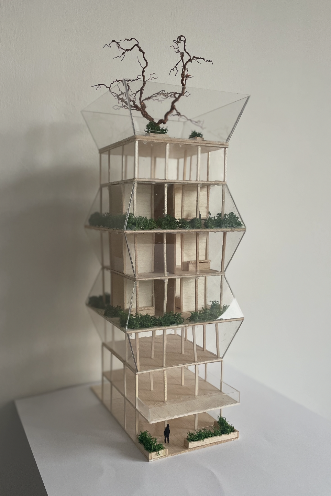

Építészmérnök hallgató · Budapest
Tér. Fény. Élet.
Az építészet ott kezdődik,
ahol a forma értelmet nyer.
Rólam
Harmadéves építészmérnök hallgató vagyok az Óbudai Egyetem Ybl Miklós Építéstudományi Karán.
Munkáim során elsősorban ArchiCAD-del, Twinmotionnel és Photoshoppal dolgozom, de a kézi rajz és a makettezés ugyanolyan természetes része a tervezési folyamatomnak.
Tanulmányaim lakóépületek tervezéseivel indultak, majd a hangsúly fokozatosan a középületek felé tolódott. A jövőben szívesen. visszatérnék a lakóépítészethez és elmélyíteném tudásomat a belsőépítészetben is – ezek azok a területek, amelyekben a továbbiakban leginkább kibontakoznék.
Kapcsolat
Szívesen csatlakoznék egy inspiráló irodához, hogy a tanulmányaimat gyakorlati tapasztalattal egészítsem ki.
nemeth.anna0310@gmail.com